Four workflows, tested end to end
FP | Abdelhakim Boukeffoussa | … · GoHighLevel · all four published · tested Oct 5, 2026
| Workflow | Trigger | What it does |
|---|---|---|
| Opt-in Workflow | Form submitted, filtered to FP | Abdelhakim Boukeffoussa | Qualifying Form only | Sends the plan (Delivery Email) → creates the opportunity in Opted In → notifies the owner (one named user, followers off) → scores the lead → tag + stage Qualified or Unqualified |
| Qualified Follow-up | Tag added: fp ab qualified |
Wait 1 day → Q1 · wait 2 days → Q2 · wait 3 days → Q3 |
| Unqualified Nurture | Tag added: fp ab unqualified |
Wait 1 day → N1 · wait 2 days → N2 · wait 3 days → N3 |
| Booking Workflow | Customer booked appointment, filtered to FP | Abdelhakim Boukeffoussa | Matching Call only | Booking Confirmation → opportunity to Call Booked → removes the contact from the follow-up and the nurture → waits until 24 h before the call → Booking Reminder |
The scoring rule (If/else "FP AB | Qualified?"). Qualified = monthly revenue is not "Under $25K" and not "$25K–$50K" and admin hours are not "Under 5" and not "5–10". Everything else goes to the Unqualified branch. The same rule sends the form to the booking page or to the thank-you page, so the page a lead sees always matches the emails they get.
Decisions and why. - Every trigger is filtered to this project's form, tags and calendar. The account is shared by every bootcamp student, so an unfiltered trigger would email other students' leads. - The follow-up stops the moment a call is booked. Nobody gets "book a call" emails after booking. - 3 qualified + 3 unqualified emails. The Day 10 slides and the guidelines doc disagree (3 + 1 vs 2 + 3); 3 + 3 satisfies both. - Re-entry is on for the Opt-in Workflow. Someone who submits again gets the plan again. The follow-ups are tag-triggered, so they don't restart. - Reminder 24 h before, skipped if the call is booked for the next few hours. A same-day booking already got the confirmation; a second email would be noise. - Plain emails, one link each, from "The Pareto Talent team". They read like a person wrote them, and every link goes to one place: the plan or the booking page.
How it was tested
Two fresh contacts through the live form on Oct 5: one qualified ($100K–$250K, 20+ hours) and one unqualified (under $25K, 5–10 hours). The day-long waits were set to minutes for the test, then put back to 1, 2 and 3 days. The qualified contact then booked a Matching Call through the booking page.
| Check | Result |
|---|---|
| Qualified lead redirected to the booking page | ✅ |
| Unqualified lead redirected to the thank-you page | ✅ |
| Delivery Email sent to both | ✅ |
| Tags, stages and owner notification | ✅ |
| Q1 → Q2 → Q3 sent in order | ✅ |
| N1 → N2 → N3 sent in order | ✅ |
| Booking: confirmation with time, video link, plan link and reschedule link | ✅ |
| Booking: stage moved to Call Booked, sequences stopped | ✅ |
| Booking: reminder | ⏳ fires Oct 7, 11:00 (24 h before the test call on Oct 8) |
Two findings a real launch would fix first. 1. The emails land in Gmail's Spam folder. They go out from the shared bootcamp sender with no custom domain. For Pareto's launch: send from a paretotalent.com subdomain with SPF, DKIM and DMARC set up and a short warm-up before any ad spend. 2. Other students' workflows also fired on the test contacts (three extra emails from unfiltered triggers in the shared account). This project's workflows don't do that in the other direction: every trigger above is filtered.
Workflow 1 · Opt-in (full view)
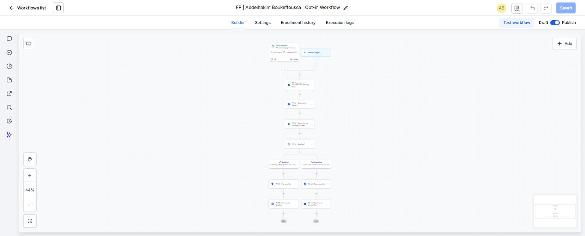
Opt-in, closer
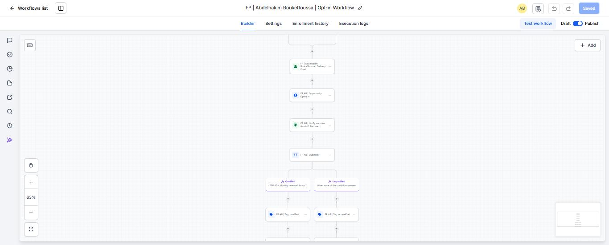
The qualified rule
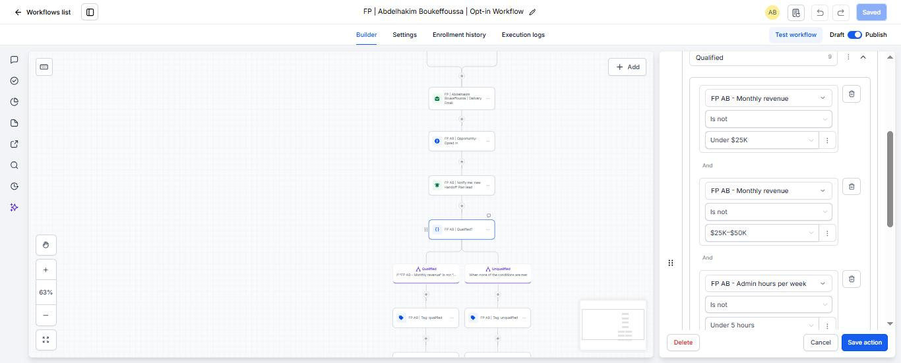
Workflow 2 · Qualified Follow-up
Workflow 3 · Unqualified Nurture
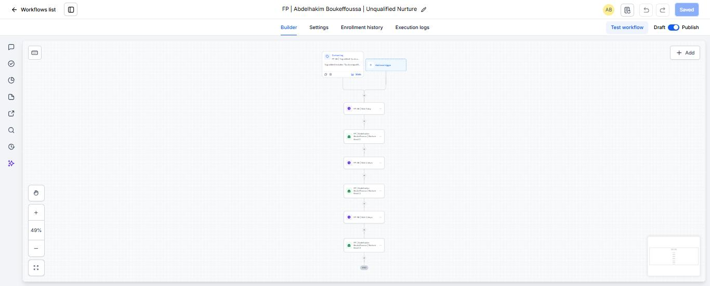
Workflow 4 · Booking
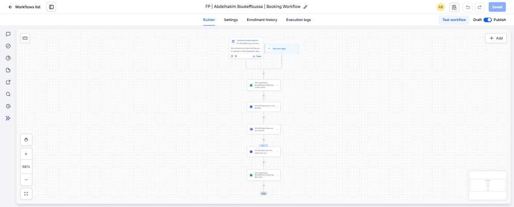
Test evidence
Opt-in log (both test leads)
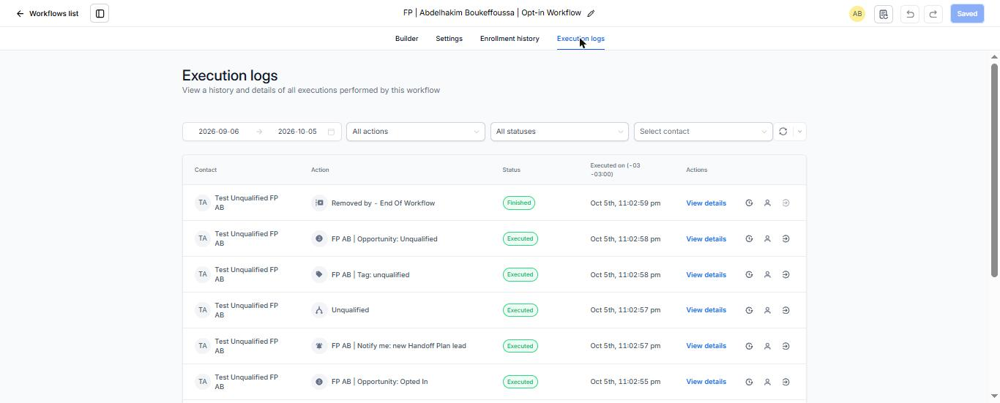
Qualified Follow-up log (Q1, Q2, Q3 sent)
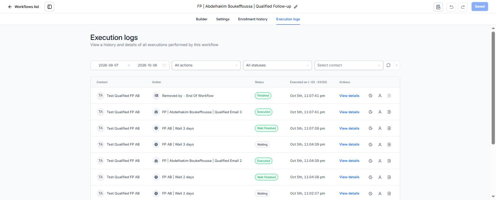
Unqualified Nurture log (N1, N2 sent, N3 next)
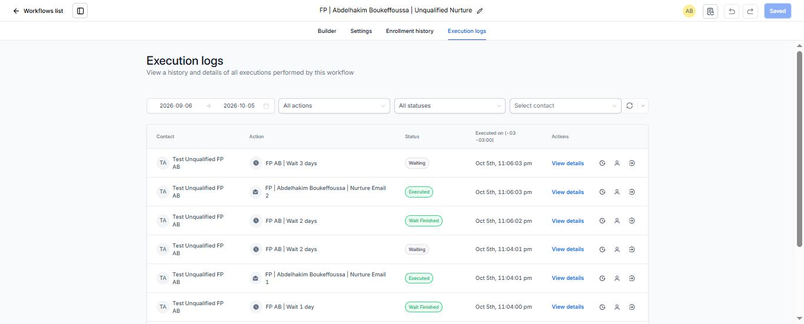
Booking Workflow log
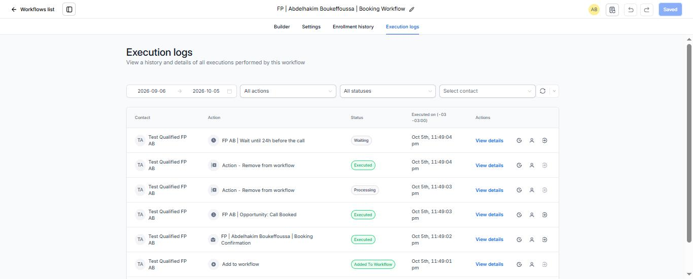
What the lead sees after booking
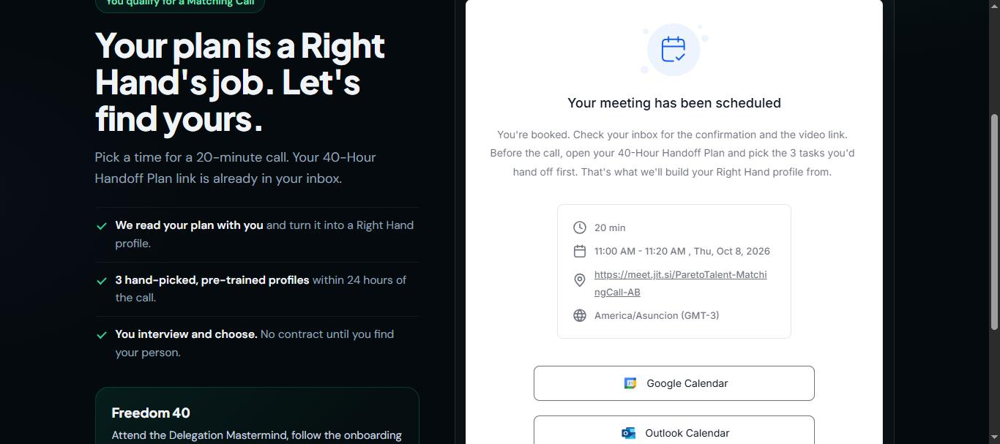
The inbox: all 9 emails received
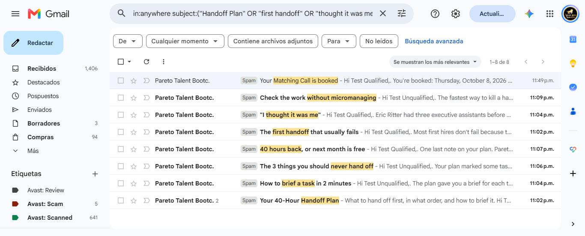